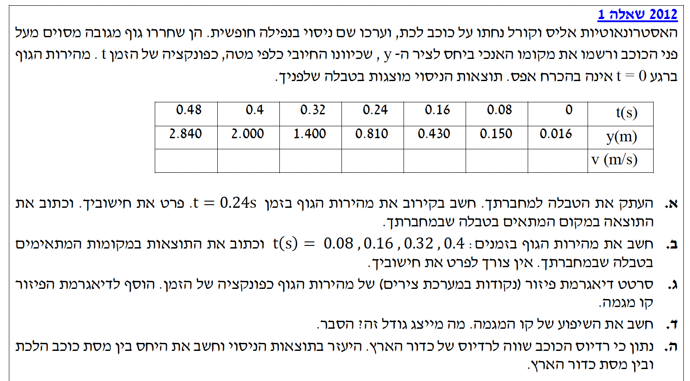

נושא: קינמטיקה של נפילה חופשית וגרפים

לפני שניגש לסעיפים, נסדר את המחשבות. האסטרונאוטיות משחררות גוף בנפילה חופשית על כוכב לכת מסוים. ציר ה-\(y\) הוגדר על ידן כך שכיוונו החיובי הוא כלפי מטה. מכיוון שתאוצת הכובד תמיד פועלת כלפי מטה, והציר החיובי חופף לכיוון זה, תאוצת הגוף \(a\) היא חיובית (\(a = +g\)).
נתונה לנו טבלת מקום-זמן. אנו מתמקדים בחישוב המהירות ברגע \(t = 0.24\text{ s}\). הנתונים כבר במערכת יחידות MKS (מטרים ושניות). נביט על שתי הנקודות הצמודות לרגע זה כדי לחשב מהירות ממוצעת:
בזמן \(t_1 = 0.16\text{ s}\), המקום הוא \(y_1 = 0.430\text{ m}\).
בזמן \(t_2 = 0.32\text{ s}\), המקום הוא \(y_2 = 1.400\text{ m}\).
חישוב בקירוב של המהירות הרגעית של הגוף בזמן \(t = 0.24\text{ s}\).
לחישוב מהירות ממוצעת נשתמש בנוסחה מקינמטיקה: \(\overline{v}=\frac{\Delta x}{\Delta t}\). במקרה שלנו ציר התנועה הוא \(y\), ולכן נכתוב \(\overline{v} = \frac{\Delta y}{\Delta t}\).
כדי למצוא את המהירות בקירוב בזמן \(t = 0.24\text{ s}\), נחשב את המהירות הממוצעת בפרק הזמן הסימטרי שסביבו, כלומר בין \(0.16\text{ s}\) לבין \(0.32\text{ s}\):
אותה טבלת מקום-זמן מהשאלה. גם כאן הנתונים ב-MKS.
את המהירויות ברגעים \(t = 0.08, 0.16, 0.32, 0.40\text{ s}\) והשלמתן לטבלה. אין צורך לפרט את החישוב, אך אנו נציג אותו לשם הבנה.
שוב, נשתמש בנוסחת המהירות הממוצעת מקינמטיקה: \(\overline{v}=\frac{\Delta x}{\Delta t}\).
נחשב באופן זהה לסעיף א' עבור כל רגע אמצעי בין שתי מדידות סמוכות (הפרש הזמנים בכל חישוב הוא \(\Delta t = 2 \cdot 0.08 = 0.16\text{ s}\)):
הטבלה המעודכנת (עם הקירובים ל-2 ספרות אחרי הנקודה לנוחות):
| \(t \text{ (s)}\) | \(0\) | \(0.08\) | \(0.16\) | \(0.24\) | \(0.32\) | \(0.40\) | \(0.48\) |
|---|---|---|---|---|---|---|---|
| \(y \text{ (m)}\) | \(0.016\) | \(0.150\) | \(0.430\) | \(0.810\) | \(1.400\) | \(2.000\) | \(2.840\) |
| \(v \text{ (m/s)}\) | \(2.59\) | \(4.13\) | \(6.06\) | \(7.44\) | \(9.00\) |
זוגות הערכים \((t, v)\) שחישבנו בסעיפים הקודמים.
לסרטט דיאגרמת פיזור של המהירות כפונקציה של הזמן ולהוסיף קו מגמה.
אין כאן נוסחה ספציפית מדף הנוסחאות, אלא בניית גרף לפי עקרונות תצוגת נתונים בפיזיקה.
נציב את הנקודות במערכת צירים, בה ציר ה-x הוא הזמן (s) וציר ה-y הוא המהירות (m/s), ונעביר דרכן את הקו הישר המייצג אותן בצורה הטובה ביותר (קו מגמה).
יש לנו את גרף המהירות-זמן מקודם, וקו המגמה שעובר דרך (או קרוב מאוד) לנקודות התצפית. למשל, ניקח שתי נקודות מרוחקות זו מזו שנמצאות בדיוק על קו המגמה כדי לחשב את השיפוע: הנקודה הראשונה \((0.08\text{ s}, 2.59\text{ m/s})\) והנקודה האחרונה \((0.40\text{ s}, 9.00\text{ m/s})\).
לחשב את שיפוע קו המגמה ולהסביר איזה גודל פיזיקלי הוא מייצג.
נוסחת השיפוע ממתמטיקה \(m = \frac{\Delta y}{\Delta x}\), שבהקשר הפיזיקלי שלנו היא \(a = \frac{\Delta v}{\Delta t}\) (נגזר מהקשר הקינמטי \(v=v_0+at\) או \(a=\frac{dv}{dt}\) בדף הנוסחאות).
נציב את שתי הנקודות שבחרנו מקו המגמה בחישוב השיפוע:
ניתן להגיד בקירוב טוב שהשיפוע הוא \(20 \text{ m/s}^2\).
תאוצת הנפילה החופשית בכוכב הלכת היא \(g_{\text{planet}} = 20\text{ m/s}^2\).
תאוצת הכובד על פני כדור הארץ מוכרת לנו כ- \(g_E = 10\text{ m/s}^2\) (מקובל לחישובים בבגרות).
נתון כי רדיוס הכוכב שווה לרדיוס כדור הארץ, כלומר: \(R_{\text{planet}} = R_E\).
את היחס בין מסת כוכב הלכת (\(M_{\text{planet}}\)) למסת כדור הארץ (\(M_E\)), כלומר את השבר \(\frac{M_{\text{planet}}}{M_E}\).
נשתמש בחוק הכבידה העולמי: \(F=G\frac{m_1 m_2}{r^2}\) ובחוק השני של ניוטון: \(F=mg\).
ראשית, נפתח קשר כללי לתאוצת הכובד \(g\) על פני כוכב לכת. נשווה את כוח הכבידה הפועל על גוף המסה \(m\) על פני הכוכב, למשקלו (על פי הגדרת הדינמיקה):
המסה \(m\) של הגוף מצטמצמת, ונקבל את הנוסחה לתאוצת הכובד:
כעת, נכתוב את תאוצת הכובד עבור כדור הארץ ועבור כוכב הלכת ונבצע חלוקה בין המשוואות (יחס):
נציב את הנתון \(R_{\text{planet}} = R_E\). מכיוון שקבוע הכבידה העולמי \(G\) וכעת גם הרדיוסים שווים, הם מצטמצמים כולם במונה ובמכנה!
נציב את ערכי תאוצות הכובד שבידינו: